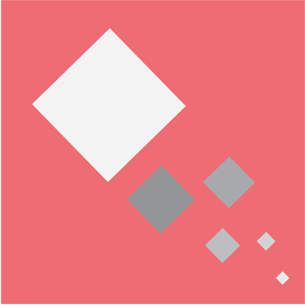

Material 디자인
구글이 만든 Material Design은 성공적인 디자인의 기본 원칙을 기술 및 혁신과 합친 디자인 언어입니다. 구글의 목표는 어느 플랫
폼 상에서도 구글의 상품에 통합된 UX를 제공할 수 있는 디자인 시스템을 개발하는 것입니다.
원칙
-
Material은 은유법입니다
Material Design의 은유법은 공간과 움직임 사이의
관계를 정의합니다. 기술은 종이와 잉크에서 영감을
얻었고, 창작와 혁신을 가능하게 했습니다. 표면과
경계는 물리적 세상 너머의 기술을 사용자가 빠르게
이해할 수 있도록 하는 친숙한 시각적 신호를 제공
할 것입니다.
-
굵은, 그래픽, 의도된
그리드, 타이포그래피, 색상, 그리고 이미지와 같은
구성 요소들을 활용하면 시각적으로 뛰어날 뿐만 아
니라 사용자에게 콘텐츠의 계층 구조, 의미, 그리고
집중해야 할 부분을 알려줄 수 있습니다. 이처럼 각
기 다른 액션들과 요소들은 사용자에게 시각적 가이
드를 제공해 줄 수 있습니다.
- 
-
의미를 제공하는 모션
모션을 이용하면 사용자가 화면에 보이는 것과 실제
를 동일시 할 수 있도록 합니다. 모션은 피드백과 친
숙도 모두를 사용자에게 제공해줌으로써, 사용자가
친숙하지 않은 기술에 완전히 몰입할 수 있게 합니
다. 또한 모션은 일관성과 지속성을 포함하며, 사용
자에게 추가로 대상과 변화에 대한 잠재적인 정보를
제공합니다.